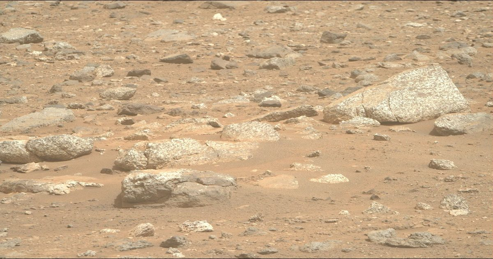

Путешествие в глубины древнего Марса?
Написано Алексом Джонсом, кандидатом наук в Имперском колледже Лондона 29 сентября 2026 года.
Проведя последние шесть месяцев, исследуя «Озеро Шарм», область древних пород за западным краем кратера Езеро, «Настойчивость» наткнулась на обширное поле светлых пород, присыпающих поверхность Марса.
Светлые камни - странное зрелище на Марсе, …